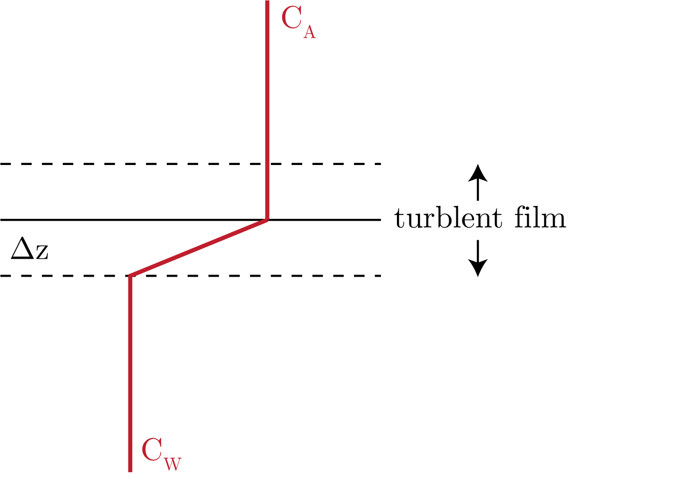
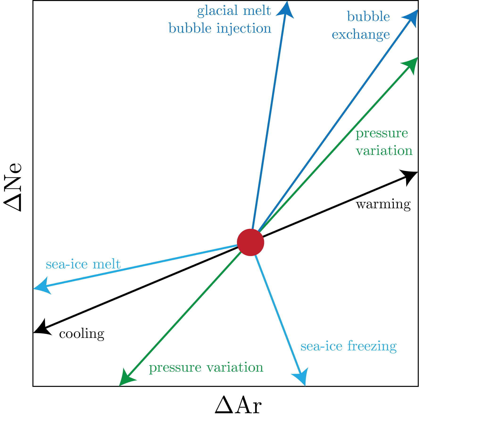

We can define the difference between the atmosphere and the ocean:
\begin{equation}
\Delta \left[\text{O}_2\right] = \left(\left[\text{O}_2\right]_{atm} - \left[\text{O}_2\right]_{oc} \right).
\end{equation}
This gradient drives the passive diffusion of gases.
We then define Henry's Law:
\begin{equation}
p_A = \chi_A P,
\end{equation}
and solubility, $S$:
\begin{equation}
C_A = S_A p_A.
\end{equation}
We can define the fugacity to capture the non-ideality of gases to get:
\begin{equation}
S_A \sim f_A = \phi_A p_A,
\end{equation}
for $\phi_A$ acting like the activity coefficient $\gamma$ we have encountered previously.
Stagnant Film Model
The setup is presented in Fig. 1

Fig. 1: The stagnant film model for gas exchange.
We start by defining Ficks' First Law:
\begin{equation}
F = D \partial_z C \simeq D \frac{C_A - C_W}{\Delta z} = k_w(C_A - C_w).
\end{equation}
We define $k_w$ as the piston velocity or the gas transfer velocity which we say is about 3 [m d$^{-1}$] and $D$ the diffusivity.
Estimation of Piston Velocities
We first want to estimate $\Delta z$, for which we use the:
\begin{equation}
\underbrace{^{226}\text{Ra}}_{\tau_{1 / 2}\simeq 1600\: [\text{y}]} \to \underbrace{\:^{222}\text{Rn}}_{\tau_{1 / 2}\simeq_3.8\: [\text{d}]} + \alpha.
\end{equation}
Then, for this model we assume that the gas loss via gas transfer is balanced by radioactive production.
We then use the model as follows:
\begin{equation}
^{222}\text{Rn} \text{ flux } = \text{ stagnant film flux},
\end{equation}
which we then get as:
\begin{equation}
\text{MLD}(^{226}A - \: ^{222}A) = \frac{D_{\text{Rn}}}{\Delta z} \left( \left[^{222}\text{Rn}\right]_{atm} - \left[^{222}\text{Rn}\right]_{oc}\right).
\end{equation}
Another way of thinking about this is that, as the parent-daughter relationship is not at equilibrium in the water column, this must be driven by some physical processes over the MLD, which we attribute solely to passive diffusion by Fick's First Law.
The result from observational data is 40 [$\mu$m]... that is small!
However, we note that there are a lot of things that can change this piston velocity:
wind speed
wave activity
$T, S$ characteristics
surfactants
We need to balance:
diffusion of momentum, through the viscosity of seawater and the transport of new parcels of water to the surface
diffusion of gas in water
One way that we can understand all of these processes is through the Schmidt number, which we define as:
\begin{equation}
\text{Sc} = \frac{\nu}{D}.
\end{equation}
From experiments, we know that:
\begin{equation}
k_w \sim \text{Sc}^{-n}u_{10}^m,
\end{equation}
where we empirically derive $n, m$.
Following this, we can see that we can get:
\begin{equation}
n = -\frac{\log\left[k_{w_1} / k_{w_2}\right]}{\log\left[\text{Sc}_1 / \text{Sc}_2\right]},
\end{equation}
where we define $1, 2$ as two separate cases, with the reference $1$ often being $\text{CO}_2.$
For most of the ocean, we get that $n = 0.5$ and is constant across all ocean condiions.
To get $m$, we just look at the transfer velocity as a function of windspeed in the ocean.
To get the velocity, people have used bomb carbon as well as releasing tracers.
Currently, people use an $m=2$ quadratic dependency on wind speed.
The equation we often use, to conclude, is:
\begin{equation}
k_w = 0.251 \langle u_{10} \rangle^2 \left( \frac{\text{Sc}}{660} \right)^{-1 / 2}.
\end{equation}
However, these do not cover bubbles (which is what I conduct research on... guess it gives me a job, haha)!
Bubble Theory
There are two major kinds of bubble injection: complete and partial bubble dissolution.
We can look at all of these processes within a vector diagram, as we do in Fig. 2

Fig. 2: Gas exchange processes and their effect on noble gas solubility anomalies.
Here, we define the solubility anomaly as:
\begin{equation}
\Delta C = \frac{C_{meas}}{C_{eq}} - 1.
\end{equation}
Mixed Layer Dynamics
Now, we can calculate:
\begin{equation}
k_w = \frac{D}{\Delta z} \simeq \frac{10^{-5}\: [\text{cm}^{2}\text{s}^{-1}]}{40\: [\mu\text{m}]} = 3 \: [\text{m d}^{-1}].
\end{equation}
Then, for the ML the residence time is:
\begin{equation}
\tau = \frac{50}{3} \simeq 2 \: [\text{weeks}],
\end{equation}
for $\tau$ the residency time, or the time that it takes the concentration to get to 1/e.
This number is true for more ideal gases, and those that do not deal with the carbonate system.
However, for $\text{CO}_2$, we get that we have the carbonate system to deal with.
Therefore, we have:
\begin{equation}
\text{CO}_2 \leftrightharpoons \text{H}_2\text{CO}_3^{\ast} \leftrightharpoons \text{H}^{+} + \text{HCO}_3^{-} \leftrightharpoons \text{H}^{+} + \text{CO}_3^{2-}.
\end{equation}
Now, we $\text{CO}_2$, we define something called the Ravelle Factor, which.
\begin{equation}
\text{RF} = \frac{\partial p\text{CO}_2}{\partial DIC} \frac{DIC}{p\text{CO}_2} \simeq \frac{\Delta p\text{CO}_2 / p\text{CO}_2}{\Delta DIC / DIC} \sim 9 \text{ to } 10,
\end{equation}
therefore we get that for the carbonate system that:
\begin{equation}
\tau^\ast = \text{RF}\tau \sim 5 \: [\text{months}].
\end{equation}
We can plot the RF against carbonate ion and get that it decreases nonlinearly with carbonate ion concentration.
We see that the RF increases with latitude, as there is more carbonate ion at lower latitudes on the coast of the US given that the high temperatures have more evaporation leads to greater alkalinity to DIC ratio, and thus a larger buffering capacity.
Carbonate System Residencies
We can calculate the residence time as:
\begin{equation}
\tau = \frac{\text{Inventory}}{\text{Flux}} \simeq 10 \: [\text{y}].
\end{equation}
That is huge!
We can look at the $\Delta^{14}$C if different ocean water as a function of latitude, and we get a similar inverse relationsip between water mass age and $\Delta^{14}$C, that is we get atmospheric deposition in the younger (Atlantic) waters and then the radioactive decay reduces the values as the water masses are transported and get older.
Another way that we can get these residence times is from CFCs, given the well known record we have in the atmosphere, and what we get is the best record we have for accumulation of anthropogenic carbon into the ocean.
What we get is the younger water has more DIC in it, from the anthropogenic carbon!